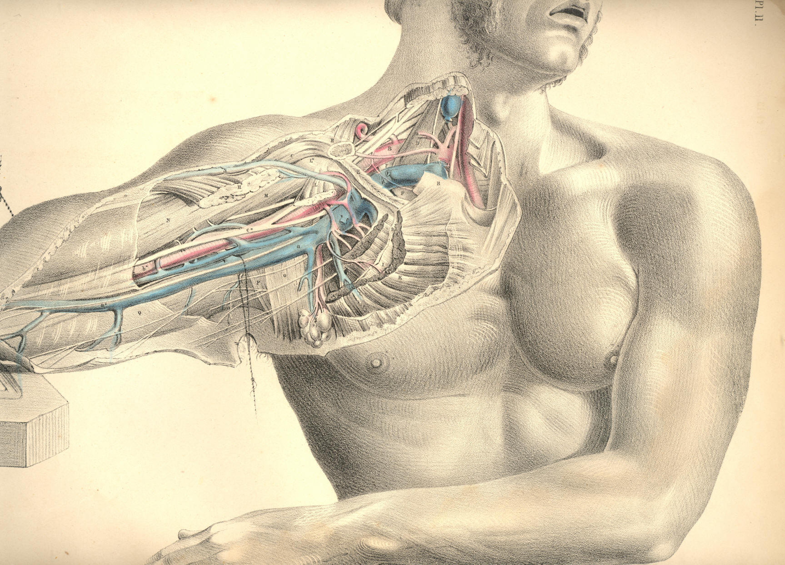
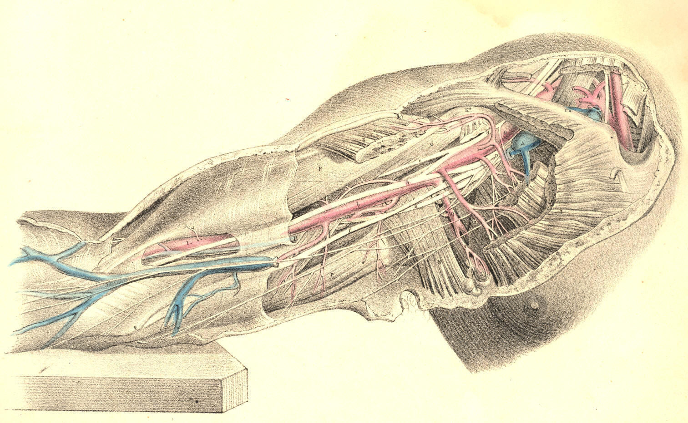

COMMENTARY ON PLATES 11 & 12.
THE SURGICAL DISSECTION OF THE AXILLARY AND BRACHIAL REGIONS,
DISPLAYING THE RELATIVE ORDER OF THEIR CONTAINED PARTS.
All surgical regions have only artificial boundaries; and these, as
might be expected, do not express the same meaning while viewed from
more points than one. These very boundaries themselves, being moveable
parts, must accordingly influence the relative position of the
structures which they bound, and thus either include within or exclude
from the particular region those structures wholly or in part which are
said to be proper to it. Of this kind of conventional surgical boundary
the moveable clavicle is an example; and the bloodvessels which it
overarches manifest consequently neither termination nor origin except
artificially from the fixed position which the bone, R, assumes, as in
Plate 11, or c*, Plate 12. In
this position of the arm in relation to
the trunk, the subclavian artery, B, terminates at the point where,
properly speaking, it first takes its name; and from this point to the
posterior fold of the axilla formed by the latissimus dorsi muscle, O,
Plate 11, N, Plate 12, and the anterior fold formed by the great
pectoral muscle, K, Plate 11, I, Plate 12, the continuation of the
subclavian artery is named axillary. From the posterior fold of the
axilla, O P, Plate 11, to the bend of the elbow, the same main vessels
take the name of brachial.
When the axillary space is cut into from the forepart through the great
pectoral muscle, H K, Plate 11, and beneath this through the lesser
pectoral muscle, L I, together with the fascial processes which invest
these muscles anteriorly and posteriorly, the main bloodvessels and
nerves which traverse this space are displayed, holding in general that
relative position which they exhibit in Plate 11. These vessels, with
their accompanying nerves, will be seen continued from those of the
neck; and thus may be attained in one view a comparative estimate of the
cervical and axillary regions, together with their line of union beneath
the clavicle, c*, Plate 12,
R, Plate 11, which serves to divide them
surgically.
In the neck, the subclavian artery, B, Plate 11, is seen to be separated
from the subclavian vein, A, by the breadth of the anterior scalenus
muscle, D, as the vessels arch over the first rib, F. In this region of
the course of the vessels, the brachial plexus of nerves, C, ranges
along the outer border of the artery, B, and is separated by the artery
from the vein, A, as all three structures pass beneath the clavicle, R,
and the subclavius muscle, E. From this latter point the vessels and
nerves take the name axillary, and in this axillary region the relative
position of the nerves and vessels to each other and to the adjacent
organs is somewhat changed. For now in the axillary region the vein, a,
is in direct contact with the artery, b,
on the forepart and somewhat to
the inner side of which the vein lies; while the nerves, D, d, Plate 12,
embrace the artery in a mesh or plexus of chords, from which it is often
difficult to extricate it, for the purpose of ligaturing, in the dead
subject, much less the living. The axillary plexus of nerves well merits
the name, for I have not found it in any two bodies assuming a similar
order or arrangement. Perhaps the order in which branches spring from
the brachial plexus that is most constantly met with is the one
represented at D, Plate 12, where we find, on the outer border of B, the
axillary artery, a nervous chord, d,
giving off a thoracic branch to
pass behind H, the lesser pectoral muscle, while the main chord itself,
d, soon divides into two
branches, one the musculo-cutaneous, e,
which
pierces G, the coraco-brachialis muscle, and the other which forms one
of the roots of the median nerve, h.
Following that order of the nerves
as they are shown in Plate 12, they may be enumerated from without
inwards as follows:--the external or musculo-cutaneous, e; the two roots
of the median, h; the
ulnar, f; the musculo-spiral,
g; the
circumflex,
i; close to which are seen the
origins of the internal cutaneous, the
nerve of Wrisberg, some thoracic branches, and posteriorly the
subscapular nerve not seen in this view of the parts.
The branches which come off from the axillary artery are very variable
both as to number and place of origin, but in general will be found
certain branches which answer to the names thoracic, subscapular, and
circumflex. These vessels, together with numerous smaller arteries,
appear to be confined to no fixed point of origin, and on this account
the place of election for passing a ligature around the main axillary
artery sufficiently removed from collateral branches must be always
doubtful. The subscapular artery, Q, Plate 12, is perhaps of all the
other branches that one which manifests the most permanent character;
its point of origin being in general opposite the interval between the
latissimus and sub-scapular muscles, but I have seen it arise from all
parts of the axillary main trunk. If it be required to give, in a
history of the arteries, a full account of all the deviations from the
so-called normal type to which these lesser branches here and elsewhere
are subject, such account can scarcely be said to be called for in this
place.
The form of the axillary space is conical, while the arm is abducted
from the side, and while the osseous and muscular structures remain
entire. The apex of the cone is formed at the root of the neck beneath
the clavicle, R, Plate 11, and the subclavious muscle, E, and between
the coracoid process, L*, of the scapula and the serratus magnus muscle,
as this lies upon the thoracic side; at this apex the subclavian
vessels, A B, enter the axillary space. The base of the cone is below,
looking towards the arm, and is formed in front by the pectoralis major,
K H, and behind by the latissimus dorsi, O, and teres muscles, P,
together with a dense thick fascia; at this base the axillary vessels, a
b, pass out to the arm, and
become the brachial vessels, a*b*.
The
anterior side of the cone is formed by the great pectoral muscle, H K,
Plate 11, and the lesser pectoral, L I. The inner side is formed by the
serratus magnus muscle, M, Plate 12, on the side of the thorax; the
external side is formed by the scapular and humeral insertion of the
subscapular muscle, the humerus and coraco-brachialis muscle; and the
posterior side is formed by the latissimus dorsi, the teres and body of
the subscapular muscle.
In this axillary region is contained a complicated mass of bloodvessels,
nerves, and lymphatic glands, surrounded by a large quantity of loose
cellular membrane and adipose tissue. All the arterial branches here
found are given off from the axillary artery; and the numerous veins
which accompany these branches enter the axillary vein. Nerves from
other sources besides those of the axillary plexus traverse the axillary
space; such nerves, for example, as those named intercosto-humeral, seen
lying on the latissimus tendon, O, Plate 11. The vein named cephalic, S,
enters the axillary space at that cellular interval occurring between
the clavicular origin of the deltoid muscle, G, and the humeral
attachment of the pectoralis major, H, which interval marks the place of
incision for tying the axillary artery.
The general course of the main vessels through the axillary space would
be indicated with sufficient accuracy by a line drawn from the middle of
the clavicle, R R, Plate 11, to the inner border of the biceps muscle,
N. In this direction of the axillary vessels, the coracoid process, L*,
from which arises the tendon of the pectoralis minor muscle, L, is to be
taken as a sure guide to the place of the artery, b, which passes, in
general, close to the inner side of this bony process. Even in the
undissected body the coracoid process may be felt as a fixed resisting
point at that cellular interval between the clavicular attachments of
the deltoid and great pectoral muscles. Whatever necessity shall require
a ligature to be placed around the axillary in preference to the
subclavian artery, must, of course, be determined by the particular
case; but certain it is that the main artery, at the place B, a little
above the clavicle, will always be found freer and more isolated from
its accompanying nerves and vein, and also more easily reached, owing to
its comparatively superficial situation, than when this vessel has
become axillary. The incision required to be made, in order to reach the
axillary artery, b, from the
forepart, through the skin, both pectoral
muscles, and different layers of fasciae, must be very deep, especially
in muscular, well-conditioned bodies; and even when the level of the
vessel is gained, it will be found much complicated by its own branches,
some of which overlie it, as also by the plexus of nerves, D, Plate 12,
which embraces it on all sides, while the large axillary vein, a, Plate
11, nearly conceals it in front. This vein in Plate 11 is drawn somewhat
apart from the artery.
Sometimes the axillary artery is double, in consequence of its high
division into brachial branches. But as this peculiarity of premature
division never takes place so high up as where the vessel, B, Plate 11,
overarches the first rib, F, this circumstance should also have some
weight with the operator.
When we view the relative position of the subclavian vessels, A B, Plate
11, to the clavicle, R, we can readily understand why a fracture of the
middle of this bone through that arch which it forms over the vessels,
should interfere with the free circulation of the blood which these
vessels supply to the arm. When the clavicle is severed at its middle,
the natural arch which the bone forms over the vessels and nerves is
lost, and the free moving broken ends of the bone will be acted on in
opposing directions by the various muscles attached to its sternal and
scapular extremities. The outer fragment follows more freely than the
inner piece the action of the muscles; but, most of all, the weight of
the unsupported shoulder and arm causes the displacement to which the
outer fragment is liable. The subclavius muscle, E, like the pronator
quadratus muscle of the forearm, serves rather to further the
displacement of the broken ends of the bone than to hold them in situ.
If the head of the humerus be dislocated forwards beneath L, Plate 11,
the coracoid attachment of the pectoralis minor muscle, it must press
out of their proper place and put tensely upon the stretch the axillary
vessels and plexus of nerves. So large and resistent a body as the head
of the humerus displaced forwards, and taking the natural position of
these vessels and nerves, will accordingly be attended with other
symptoms--such as obstructed circulation and pain or partial paralysis,
besides those physical signs by which we distinguish the presence of it
as a new body in its abnormal situation.
When the main vessels and nerves pass from the axillary space to the
inner side of the arm, they become comparatively superficial in this
latter situation. The inner border of the biceps muscle is taken as a
guide to the place of the brachial artery for the whole extent of its
course in the arm. In plate 11, the artery, b*, is seen in company with
the median nerve, which lies on its fore part, and with the veins called
comites winding round it and
passing with it and the nerve beneath the
fascia which encases in a fold of itself all three structures in a
common sheath. Though the axillary vein is in close contact with the
axillary artery and nerves, yet the basilic vein, d*, the most
considerable of those vessels which form the axillary vein, is separated
from the brachial artery by the fascia. The basilic vein, however,
overlies the brachial artery to its inner side, and is most commonly
attended by the internal cutaneous nerve, seen lying upon it in Plate
11, as also by that other cutaneous branch of the brachial plexus, named
the nerve of Wrisberg. If a longitudinal incision in the course of the
brachial artery be made (avoiding the basilic vein) through the
integument down to the fascia of the arm, and the latter structure be
slit open on the director, the artery will be exposed, having the median
nerve lying on its outer side in the upper third of the arm, and passing
to its inner side towards the bend of the elbow, as at b*, Plate 12. The
superior and inferior profunda arteries, seen springing above and below
the point b, Plate 12, are
those vessels of most importance which are
given off from the brachial artery, but the situation of their origin is
very various. The ulnar nerve, f,
lies close to the inner side of the
main arterial trunk, as this latter leaves the axilla, but from this
place to the inner condyle, Q, behind which the ulnar nerve passes into
the forearm, the nerve and artery become gradually more and more
separated from each other in their descent. The musculo-spiral nerve, g,
winds under the brachial artery at the middle of the arm, but as this
nerve passes deep between the short and long heads of the triceps
muscle, P, and behind the humerus to gain the outer aspect of the limb,
a little care will suffice for avoiding the inclusion of it in the
ligature.
The brachial artery may be so effectually compressed by the fingers on
the tourniquet, against the humerus in any part of its course through
the arm, as to stop pulsation at the wrist.
The tourniquet is a less manageable and not more certain compressor of
the arterial trunk than is the hand of an intelligent assistant. At
every region of the course of an artery where the tourniquet is
applicable, a sufficient compression by the hand is also attainable with
greater ease to the patient; and the hand may compress the vessel at
certain regions where the tourniquet would be of little or no use, or
attended with inconvenience, as in the locality of the subclavian
artery, passing over the first rib, or the femoral artery, passing over
the pubic bone, or the carotid vessels in the neighbourhood of the
trachea, as they lie on the fore part of the cervical spinal column.
DESCRIPTION OF PLATES 11 & 12.
PLATE 11.
A. Subclavian vein, crossed by a branch of the brachial plexus given to
the subclavius muscle; a,
the axillary vein; a *, the
basilic vein,
having the internal cutaneous nerve lying on it.
B. Subclavian artery, lying on F, the first rib; b, the axillary artery;
b *, the
brachial artery, accompanied by the median nerve
and venae
comites.
C. Brachial plexus of nerves; c*,
the median nerve.
D. Anterior scalenus muscle.
E. Subclavius muscle.
F F. First rib.
G. Clavicular attachment of the deltoid muscle.
H. Humeral attachment of the great pectoral muscle.
I. A layer of fascia, encasing the lesser pectoral muscle.
K. Thoracic half of the great pectoral muscle.
L. Coracoid attachment of the lesser pectoral muscle.
L*. Coracoid process of the scapula.
M. Coraco-brachialis muscle.
N. Biceps muscle.
O. Tendon of the latissimus dorsi muscle, crossed by the
intercosto-humeral nerves.
P. Teres major muscle, on which and O is seen lying Wrisberg's nerve.
Q. Brachial fascia, investing the triceps muscle. .
R R. Scapular and sternal ends of the clavicle.
S. Cephalic vein, coursing between the deltoid and pectoral muscles, to
enter at their cellular interval into the axillary vein
beneath E, the
subclavius muscle.

Plate 11
PLATE 12.
A. Axillary vein, cut and tied; a,
the basilic vein, cut.
B. Axillary artery; b,
brachial artery, in the upper part of its course,
having h, the
median nerve, lying rather to its outer
side; b*, the
artery in the lower part of its course, with the median
nerve to its
inner side.
C. Subclavius muscle.
C*. Clavicle.
D. Axillary plexus of nerves, of which d is a branch on the coracoid
border of the axillary artery; e, the musculo-cutaneous
nerve, piercing
the coraco-brachialis muscle; f, the ulnar nerve; g,
musculo-spiral
nerve; h, the
median nerve; i, the
circumflex nerve.
E. Humeral part of the great pectoral muscle.
F. Biceps muscle.
G. Coraco-brachialis muscle.
H. Thoracic half of the lesser pectoral muscle.
I. Thoracic half of the greater pectoral muscle.
K. Coracoid attachment of the lesser pectoral muscle.
K*. Coracoid process of the scapula.
L. Lymphatic glands.
M. Serratus magnus muscle.
N. Latissimus dorsi muscle.
O. Teres major muscle.
P. Long head of triceps muscle.
Q. Inner condyle of humerus.

Plate 12
COMMENTARY ON PLATES 13
& 14